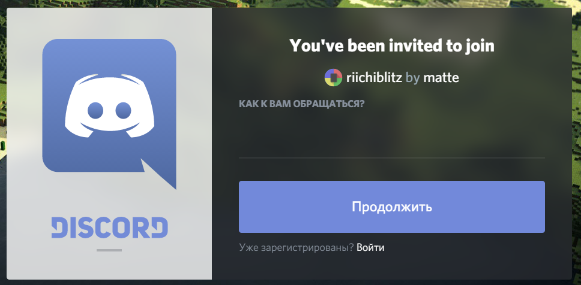
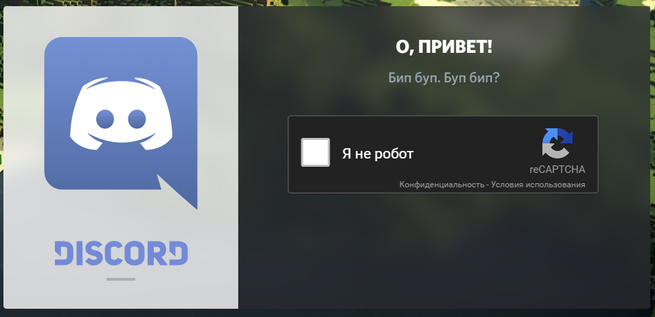
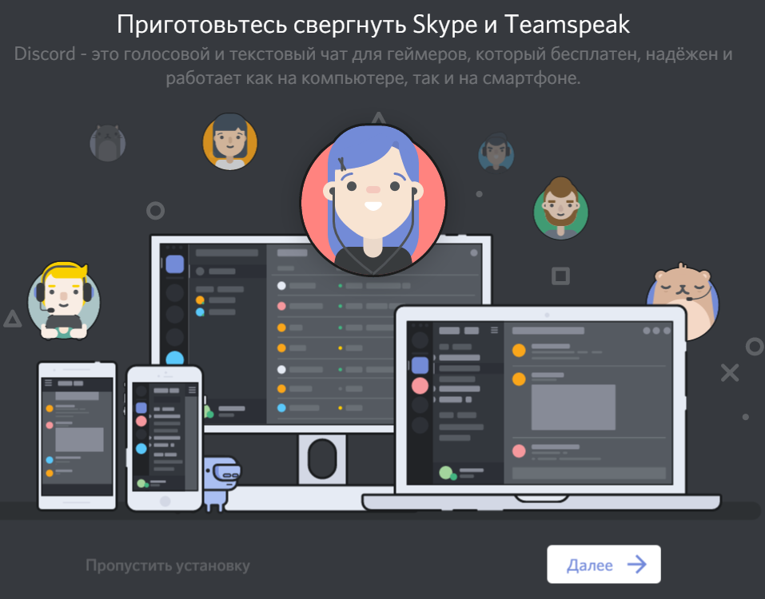
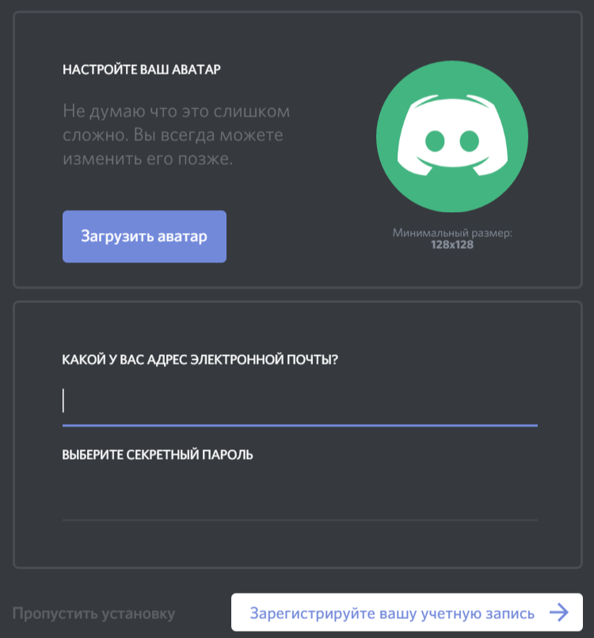
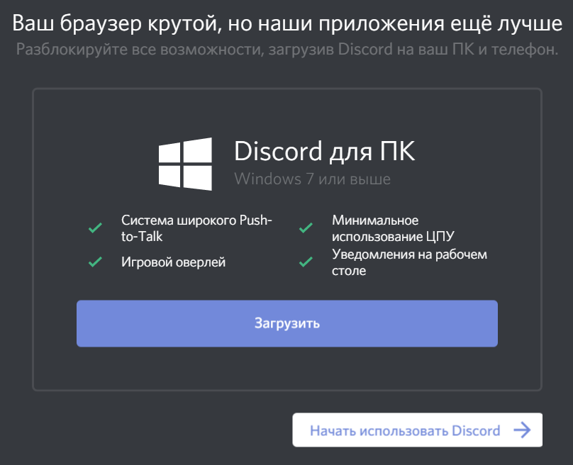
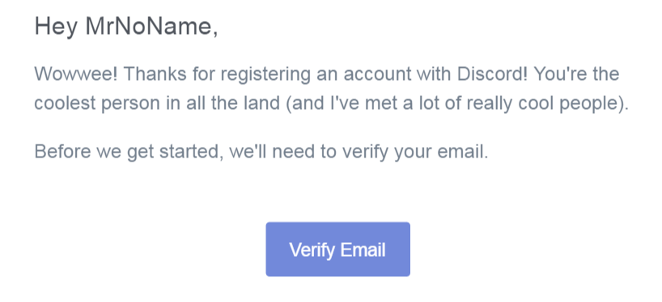
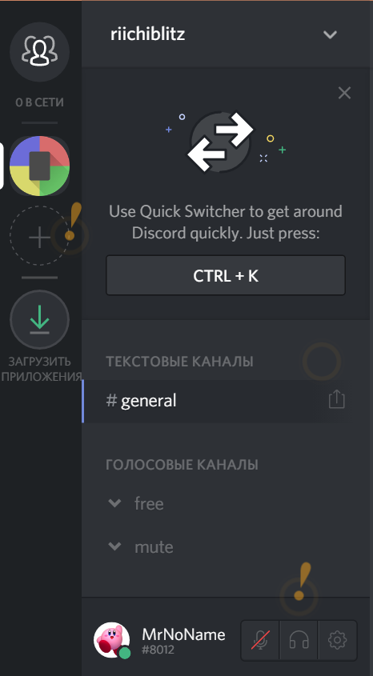
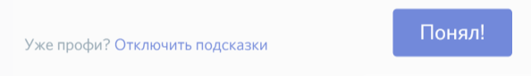
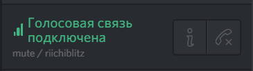
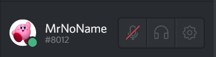

Закрыть страницу
В весеннем риичи-блице 27 мая впервые будет применяться автоматическая система голосового взаимодействия игроков. Раньше никто такого не делал, поэтому что-то может сломаться по дороге — не пугайтесь, это нормально.
Вы можете присоединиться к нашему серверу в Discord и указать при регистрации на турнир данные Вашего аккаунта (имя и числовой код, которые можно посмотреть под списком каналов — вот тут).
В ходе турнира игроки, находящиеся за одним столом, будут помещены в отдельные голосовые комнаты.
Самостоятельно попасть в эти комнаты будет невозможно, поэтому посторонних людей в них не окажется. Только Ваши непосредственные противники в текущем туре.
Помимо игровых комнат будет два общих канала: "free" для общения в перерывах, "mute" — для молчания.
Канал молчания нужен для тех, кто не хочет общаться в перерыве, но готов поговорить во время следующей игры.
Будьте внимательны! Если Вы хотите разговаривать во время игры, Вам необходимо находиться в любом голосовом канале!
Если в момент старта игр Вы будете отключены от голосовой связи, Вас будет невозможно добавить в комнату игры.
Ещё один совет. Перед началом турнира зайдите в канал "free" и проверьте, что Ваш микрофон включен. А дальше, если хотите посидеть в тишине, подключитесь к "mute". При подключении к игровой комнате микрофон, как по волшебству, вновь окажется включенным!
Discord — это онлайн-сервис для группового голосового общения. Что-то вроде Skype, только удобнее.
Для регистрации на сервере Риичи-блица пройдите по ссылке https://discord.gg/Jn7sJHC.
Вам предложат придумать себе псевдоним или войти под существующим аккаунтом (незаметная кнопочка "Войти" внизу). По правилам нашего сервера изменить псевдоним потом будет невозможно, так что придержите остроумие.
После ввода псевдонима Вам могут предложить доказать, что Вы не робот. Роботам здесь не рады.
Если у Вас всё получилось, Вы окажетесь почти где нужно.
Discord можно использовать без регистрации. Если Вы хотите полнейшей анонимности — жмите серое "Пропустить установку" слева внизу.
Однако, в таком случае Вы не сможете нигде повторно войти под этим аккаунтом.
Для регистрации через почтовый ящик нажимаем "Далее".
После установки аватара и заполнения всех полей идём дальше.
Если хотите использовать Discord не из браузера — скачивайте приложение и авторизуйтесь в нём только что созданным аккаунтом.
Тем временем, на почту уже пришло письмо подтверждения регистрации.
Понятное дело, надо подтвердить, иначе регистрация может быть аннулирована.
Когда Вы, наконец, попадёте на страницу сервера, Вы увидите примерно вот это.
При повторном входе, возможно, Вы автоматически окажетесь в списке друзей (левый верхний кружок с группой силуэтов). В этом случае не пугайтесь, просто нажмите слева на логотип Риичи-блица.
Мигающие значки по нажатию покажут подсказку.
Всех бесят подсказки, поэтому давайте уберём их совсем. Нажимаем на любую подсказку и внизу видим нужную незаметную кнопочку.
Теперь намного лучше.
По умолчанию Вы сразу попадаете в общий текстовый канал "general". Пока это единственный канал без каких-либо правил, но это в любой момент может измениться.
Помимо него на сервере есть два голосовых канала: "free" и "mute". В первом Вы можете свободно общаться голосом, во втором голосовая связь запрещена. Подключайтесь туда, если хотите помолчать.
Подключаясь к какому-то голосовому каналу, Вы отключаетесь от всех остальных. А чтобы отключиться от текущего канала (а значит и от голосовой связи совсем), нужно положить трубку кнопкой под списком каналов.
А совсем внизу есть небольшая панелька с Вашим аккаунтом.
Вот тут находятся интересные нам имя пользователя и числовой код, который нужно указать при регистрации на турнир. Если бы мы сейчас регистрировались на турнир, нам нужно было бы ввести "Ник в Discord" MrNoName и "Числовой идентификатор" 8012.
Также тут можно отключить микрофон, звук и посмотреть другие настройки (там, в том числе, можно зарегистрироваться по почте, если Вы пропустили этот шаг раньше).
Будьте внимательны! Если Вас никто не слышит — возможно, Вы сами выключили тут микрофон, или Ваши настройки активации голоса его постоянно блокируют.
В принципе, это всё, что необходимо знать и сделать. Весь остальной функционал предлагается изучить самостоятельно.
Закрыть страницу